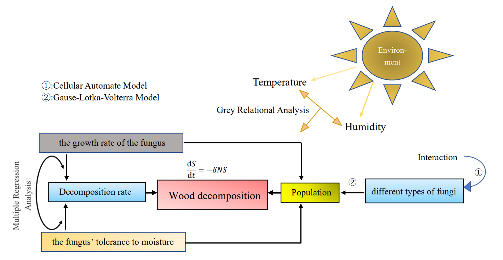

这里是自己的一些作品，包括自己整理的文稿、课程的大作业和建模论文。 建模论文见最后部分。
概率论
一维、二维与多维正态分布的定义和性质的整理，后面使用到正态分布时可以查阅。
随机变量的收敛模式、一些重要的结论，以及强大数律、弱大数律和中心极限定理。
矩阵分析
整理了矩阵可对角化的几个充要条件，包括特征值、特征子空间、代数重数和几何重数等角度。
矩阵的满秩分解、UR分解、LU分解、奇异值分解与谱分解。
数理统计
对22届数院保研成绩的简单分析，以及数据的可视化。
EM聚类的一个应用，使用了经典的鸢尾花数据集进行实验。
不确定数据分析
模糊等价关系与核函数之间的关系，及其在动态模糊聚类中的应用。
数学建模
2021年美赛论文，主要负责论文的编写与排版、数据的处理、种群动力学模型的建立，最后获得M奖（一等奖）。

论文中针对真菌对木纤维的分解的问题，构建了一系列模型来探索真菌种间相互作用和真菌分解。
关于个人整理的美赛论文模板，详见基于ElegantPaper的美赛论文模板。
2021年国赛论文，主要负责论文的编写与排版、理想抛物面模型的建立，最后获得陕西赛区一等奖。

论文中针对“FAST”反射面板调节的问题，计算得到理想抛物面的方程，设计了调节算法，建立了反射面板的调节模型，最后计算了反射面板调整前后的接收比的大小。
2021年iGEM建模部分，主要负责部分模型的建立、程序的编写、结果的整理、presentation video中建模部分的介绍等，最后项目获得银奖。


关于iGEM建模的指导，详见iGEM中的常微分方程模型。